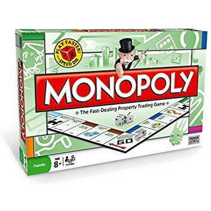

El juego de mesa mesa más vendido de la historia
Antes
Un juego creado con la funcion de servir como herramienta para enseñar las teorias acerca de la justicia social y economica extraidas del estudio titulado Procesoy Miseria de Henry George.

Monopoly
Comercializado por vez primera en el añode 1936
Al lo largo de 80 años, el juego a sufrido una notable evolucion. Sus multiples ediciones y sus tantas versiones han dado pie a que se cambiara desde la caja que lo contiene hasta los elementos que lo componen. Logrando así, mantenerse como el favorito a través de las décadas.
Ahora
Con los años la finalidad del juego cambio para solo disfrutar un buen rato, negociado propiedades y hasta haciendo uso de medios electronicos para todas las transacciones que requiere el juego.
